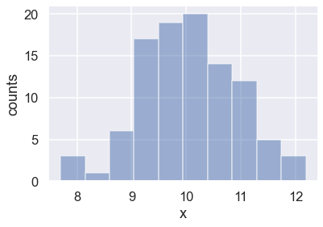
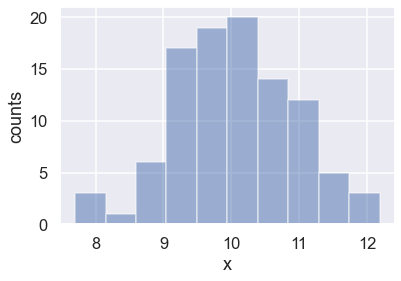

16. Bayesian parameter estimation demonstration¶
Last revised: 15-Sep-2019 by Christian Forssén [christian.forssen@chalmers.se]
16.1. Import of modules¶
import numpy as np
import matplotlib.pyplot as plt
%matplotlib inline
# Not really needed, but nicer plots
import seaborn as sns
sns.set()
sns.set_context("talk")
16.2. Example: Gaussian noise and averages¶
Adapted from Sivia: Data Analysis: A Bayesian Tutorial
Here we’ll take a look at a simple parameter-estimation problem. We will compare the frequentist and Bayesian approaches. This problem is an extended version of Example 2 in Ch 2.3 of the book by Sivia. This short book is very readable and is highly recommended.
# Modules needed for Example 1
from scipy import stats
import emcee
import corner
Let us consider the problem of estimating the mean and the variance of a normal distribution that is associated with a collection of random variables. The normal distribution $\( p(x|\mu,\sigma) = \frac{1}{\sqrt{2\pi}\sigma} \exp \left(-\frac{(x-\mu)^2}{2\sigma^2} \right), \)$ is often used as a theoretical model to describe the noise associated with experimental data.
Why is a normal (Gaussian) distribution so often a good statistical model?
Let us assume that we have a series of \(M\) measurements \(D \equiv \{ x_k \} = (x_1, \ldots, x_M)\), that are samples from a normal \(\mathcal{N}(\mu, \sigma^2)\) population, from which we would like to learn the approximate values of the parameters \(\mu\) and \(\sigma\). The standard frequentist approach to this problem is the maximum likelihood method, The Bayesian approach is to compute the posterior distribution for the model parameters \(\mu\) and \(\sigma\).
Here we’ll use Python to generate some toy data to demonstrate the two approaches to the problem.
# Generating some data
np.random.seed(1) # for repeatability
mu_true = 10 # true peak position
sigma_true = 1 # true standard deviation
M = 100 # number of measurements
D = stats.norm.rvs(mu_true, sigma_true, size=M) # M measurements (samples)
Side note: try shift-shift-tab to get documentation!
Look at the array D. Are the number of entries in the “tails” what you would expect?
Hint: Roughly how many entries do you expect to find two sigma away from the mean?
Let’s verify your answer with visualizations!
First, let’s make two simple visualizations of the “measured” data: a scatter plot and a histogram
fig1, ax1 = plt.subplots()
ax1.scatter(D, np.arange(M), alpha=0.5)
ax1.vlines([mu_true], 0, M, alpha=0.2)
ax1.set_xlabel("x");ax1.set_ylabel("measurement number");
fig2, ax2 = plt.subplots()
ax2.hist(D,alpha=0.5)
#ax1.vlines([mu_true], 0, M, alpha=0.2)
ax2.set_xlabel("x");ax2.set_ylabel("counts");
 

Matplotlib alternative: one figure with two subplots using an array of axes.
fig, axes = plt.subplots(nrows=1, ncols=2, figsize=(12,5))
# An alternative keeping the same axis names as before would be:
# fig, (ax1, ax2) = plt.subplots(nrows=1, ncols=2, figsize=(12,5))
axes[0].scatter(D, np.arange(M), alpha=0.5)
axes[0].vlines([mu_true], 0, M, color='red', alpha=0.2)
axes[0].set_xlabel("x"); axes[0].set_ylabel("measurement number");
axes[1].hist(D,alpha=0.5)
axes[1].set_xlabel("x"); axes[1].set_ylabel("counts");
fig.tight_layout()
What can you conclude about the tails?
Change np.random.seed(1) to a different number so that a different set of random number is generated.
Frequentist approach to Gaussian parameter estimation¶
We’ll start with the classical frequentist maximum likelihood approach. The probability of a single measurement \(D_i\) having a value \(x_i\) is given by
where \(\mu\), \(\sigma\) are the true values for the model parameters.
We construct the likelihood function by computing the product of the probabilities for each data point:
Because the value of the likelihood can become very small, it is often more convenient to instead compute the log-likelihood. Furthermore, when we are looking for the maximum of the likelihood, we might just as well maximize the log-likelihood. Combining the previous two equations and computing the log, we have
What we’d like to do is find \(\mu_0,\sigma_0\) such that the likelihood (or log likelihood) is maximized. For this simple problem, the maximization can be computed analytically (i.e. by setting \(\left. \partial\log\mathcal{L}/\partial\mu \right|_{\mu_0,\sigma_0} = \left. \partial\log\mathcal{L}/\partial\sigma \right|_{\mu_0,\sigma_0} = 0\)). This results in the following maximum-likelihood estimates of the true parameters:
In principle, we should also compute the second derivatives to make sure that this point represents a maximum rather than a minimum or a saddle point. However, in agreement with intuition, \(\mu_0\) is simply the mean of the observed data. These results are fairly simple calculations; let’s evaluate them for our toy dataset:
# Estimators: sample mean and (sqrt of) sample variance
# Sometimes the *unbiased* estimator for the sample variance is used with (M-1) degrees of freedom...
mu_est = D.sum()/M
sigma_est = np.sqrt(((D-mu_est)**2).sum()/M)
print("""
(mu,sigma)_true = {0:.2f}, {1:.2f}
Sample estimators:
(mu,sigma)_0 = {2:.2f}, {3:.2f} (based on {4} measurements)
""".format(mu_true, sigma_true, mu_est, sigma_est, M))
(mu,sigma)_true = 10.00, 1.00
Sample estimators:
(mu,sigma)_0 = 10.06, 0.89 (based on 100 measurements)
Aside: using fstrings by putting an f in front of the quotes.
# Estimators: sample mean and (sqrt of) sample variance
# Sometimes the *unbiased* estimator for the sample variance is used with
# (M-1) degrees of freedom...
mu_est = D.sum()/M
sigma_est = np.sqrt(((D-mu_est)**2).sum()/M)
print(f"""
(mu,sigma)_true = {mu_true:.2f}, {sigma_true:.2f}
Sample estimators:
(mu,sigma)_0 = {mu_est:.2f}, {sigma_est:.2f} (based on {M} measurements)
""")
(mu,sigma)_true = 10.00, 1.00
Sample estimators:
(mu,sigma)_0 = 10.06, 0.89 (based on 100 measurements)
Bayesian approach to Gaussian parameter estimation¶
The Bayesian approach begins and ends with probabilities (pdfs). It recognizes that what we fundamentally want to compute is our knowledge of the parameters in question, i.e. in this case,
Note that this formulation of the problem is fundamentally contrary to the frequentist philosophy, which says that probabilities have no meaning for model parameters like \(\mu,\sigma\). Nevertheless, within the Bayesian philosophy this is perfectly acceptable.
To compute this result, Bayesians next apply Bayes’ Theorem, here with the hypothesis being the Gaussian model expressed in terms of the model parameters
Though Bayes’ theorem is where Bayesians get their name, it is not this law itself that is controversial, but the Bayesian interpretation of probability implied by the term \(p(\mu,\sigma~|~D, I)\).
Let’s take a look at each of the terms in this expression:
\(p(\mu,\sigma~|~D, I)\): The posterior, or the probability of the model parameters given the data: this is the result we want to compute.
\(p(D~|~\mu,\sigma, I)\): The likelihood, which is proportional to the \(\mathcal{L}(D~|~\mu,\sigma)\) in the frequentist approach, above.
\(p(\mu,\sigma~|~I)\): The model prior, which encodes what we knew about the model prior to the application of the data \(D\).
\(p(D~|~I)\): The data probability, which in practice amounts to simply a normalization term.
If we set the prior \(p(\mu,\sigma~|~I) \propto 1\) (a flat prior), we find
and the Bayesian probability is maximized at precisely the same value as the frequentist result! So despite the philosophical differences, we see that (for this simple problem at least) the Bayesian and frequentist point estimates are equivalent.
But what about the prior?¶
You’ll noticed that we glossed over something here: the prior, \(p(\mu,\sigma)\). The choice of prior will be discussed repeatedly in the course, but we can already note that it allows inclusion of other information into the computation. This feature becomes very useful in cases where multiple measurement strategies are being combined to constrain a single model. The necessity to specify a prior, however, is one of the more controversial pieces of Bayesian analysis.
A frequentist will point out that the prior is problematic when no true prior information is available. Though it might seem straightforward to use a noninformative prior like the flat prior mentioned above, there are some surprisingly subtleties involved. It turns out that in many situations, a truly noninformative prior does not exist! Frequentists point out that the subjective choice of a prior which necessarily biases your result has no place in statistical data analysis.
A Bayesian would counter that frequentism doesn’t solve this problem, but simply skirts the question. Frequentism can often be viewed as simply a special case of the Bayesian approach for some (implicit) choice of the prior: a Bayesian would say that it’s better to make this implicit choice explicit, even if the choice might include some subjectivity.
Applying the Bayesian approach¶
Leaving these philosophical debates aside for the time being, let’s address how Bayesian results are generally computed in practice. For a one parameter problem like the one considered here, it’s as simple as computing the posterior probability \(p(\mu,\sigma~|~D,I)\) as a function of \(\mu,\sigma\): this is the distribution reflecting our knowledge of the parameter \(\mu,\sigma\). But as the dimension of the model grows, this direct approach becomes increasingly intractable. For this reason, Bayesian calculations often depend on sampling methods such as Markov Chain Monte Carlo (MCMC).
We won’t go into the details of the theory of MCMC here (again, we will be discussing this topic during the course). Instead we will show a practical example of applying an MCMC approach using Dan Foreman-Mackey’s excellent emcee package. Keep in mind here that the goal is to generate a set of points drawn from the posterior probability distribution, and to use those points to determine the answer we seek.
To perform this MCMC, we start by defining Python functions for the prior \(p(\mu,\sigma~|~I)\), the likelihood \(p(D~|~\mu,\sigma, I)\), and the posterior \(p(\mu,\sigma~|~D,I)\), noting that none of these need be properly normalized. Our model here is two-dimensional so we’ll define the model in terms of an array of parameters \(\theta\), which in this case is \(\theta = [\mu,\sigma]\):
min_theta=np.array([0,0])
max_theta=np.array([100,10])
volume_theta=np.prod(max_theta-min_theta)
def log_prior(theta):
'''Log prior for parameter array theta'''
assert len(theta)==2, "Parameter vector must have length two."
# flat prior
if np.logical_and(min_theta<=theta, theta<=max_theta).all():
return np.log(1/volume_theta)
else:
return -np.inf
def log_likelihood(theta, X):
'''Log likelihood for data X given parameter array theta'''
try:
return -0.5 * np.sum( ( (X - theta[0]) / theta[1] )** 2 ) \
- 0.5*len(X)*np.log(2*np.pi*theta[1]**2)
except ValueError:
return -np.inf
def log_posterior(theta, X):
'''Log posterior for data X given parameter array theta'''
return log_prior(theta) + log_likelihood(theta, X)
Now we set up the problem, including generating some random starting guesses for the multiple chains of points.
ndim = 2 # number of parameters in the model
nwalkers = 50 # number of MCMC walkers
nburn = 1000 # "burn-in" period to let chains stabilize
nsteps = 1000 # number of MCMC steps to take
# we'll start at random locations within the prior volume
starting_guesses = min_theta + max_theta * np.random.rand(nwalkers,ndim)
print("MCMC sampling using emcee (affine-invariant ensamble sampler) with {0} walkers".format(nwalkers))
sampler = emcee.EnsembleSampler(nwalkers, ndim, log_posterior, args=[D])
# "burn-in" period; save final positions and then reset
pos, prob, state = sampler.run_mcmc(starting_guesses, nburn)
sampler.reset()
# sampling period
sampler.run_mcmc(pos, nsteps)
print("Mean acceptance fraction: {0:.3f} (in total {1} steps)"
.format(np.mean(sampler.acceptance_fraction),nwalkers*nsteps))
# discard burn-in points and flatten the walkers; the shape of samples is (nwalkers*nsteps, ndim)
samples = sampler.chain.reshape((-1, ndim))
MCMC sampling using emcee (affine-invariant ensamble sampler) with 50 walkers
Mean acceptance fraction: 0.711 (in total 50000 steps)
If this all worked correctly, the array samples should contain a series of draws from the posterior. Let’s plot them using a so called corner plot (to be discussed in much more detail during the course).
# make a corner plot with the posterior distribution
fig = corner.corner(samples, labels=["$\mu$", "$\sigma$"],
truths=[mu_true, sigma_true],quantiles=[0.16, 0.5, 0.84],
show_titles=True, title_kwargs={"fontsize": 12})
# With some manual efforts, we can add the maximum-likelihood estimate from the frequentist analysis
maxlike_results = (mu_est,sigma_est)
# First, extract the axes
axes = np.array(fig.axes).reshape((ndim, ndim))
# Then, loop over the diagonal
for i in range(ndim):
ax = axes[i, i]
ax.axvline(maxlike_results[i], color="r")
# And finally, loop over the histograms
for yi in range(ndim):
for xi in range(yi):
ax = axes[yi, xi]
ax.axvline(maxlike_results[xi], color="r")
ax.axhline(maxlike_results[yi], color="r")
ax.plot(maxlike_results[xi], maxlike_results[yi], "sr")
The lower left panel in the corner plot shows the joint probability distribution for the two model parameters. The two plots on the diagonal show marginalized distributions (with one parameter integrated out) for the two model parameters. The blue lines indicate the true values of the model parameters, while the title and the dashed lines indicate the most probable value as well as a 68% confidence interval. We will be discussing these representative measures of a posterior distribution during the course.
The frequentist maximum-likelihood estimate from before is indicated by the red lines (that we added manually to the plot). As you can see, for this particular setup the maximum-likelihood estimate agrees with the most probable value from the MCMC sampling of the Bayesian posterior distribution.
The pure Bayesian result for a problem like this, however, would be to report the posterior distribution itself (i.e. its representative sample), and leave it at that. That is, in pure Bayesianism the answer to a question is not a single number with error bars; the answer is the posterior distribution over the model parameters!
Discussion¶
Now, you might come away with the impression that the Bayesian method is unnecessarily complicated, and in this case it certainly is. Using an Affine Invariant Markov Chain Monte Carlo Ensemble sampler to characterize a two-dimensional normal distribution is a bit like using the Death Star to destroy a beach ball, but we did this here because it demonstrates an approach that can scale to complicated posteriors in many, many dimensions, and can provide nice results in more complicated situations where an analytic likelihood approach is not possible.